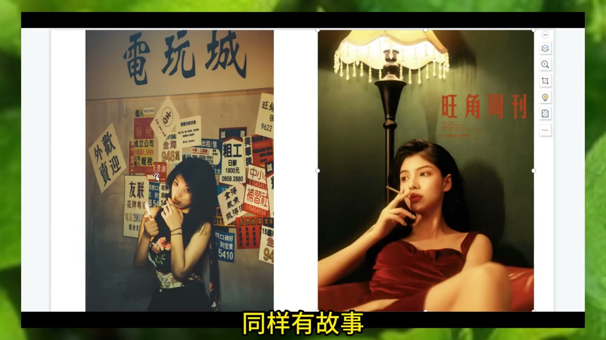
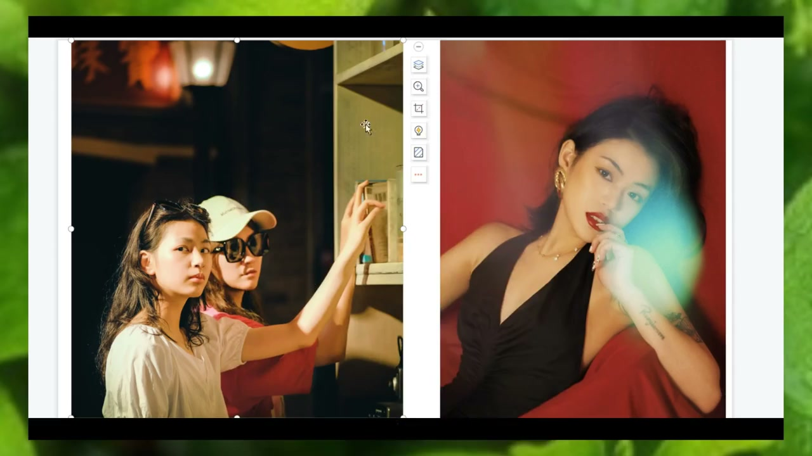
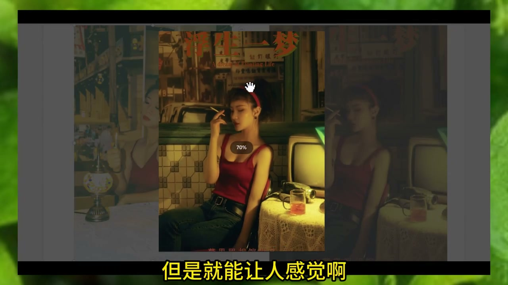
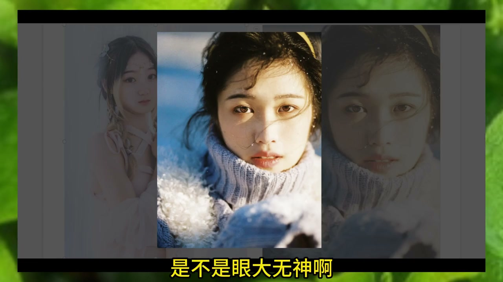

内容要点
[00:00] 这是不是你拍照 眼神呆滞不知道看哪里 感情尴尬 而模特拍照
[00:05] 眼睛里有星星 都没干嘛嘛 自然又灵动
[00:09] 人像摄影中啊 眼神是很重要的 眼睛是心灵的窗户
[00:14] 我们要打开这双窗户 就能让照片升华了 OK
[00:19] 来眼神的重要性 一个有故事的一个眼神
[00:22] 是人像摄影里画龙点睛之笔
[00:25] 优秀的人像作品肯定要做的就是 行神兼备
[00:29] 你不光把人啊 脸啊 身材拍好看
[00:32] 你的神态 你的眼神同样重要
[00:35] 通俗的讲就是 你不光要把模特的外在拍好看 拍得美
[00:39] 还要把内在的一个情绪神态给表现出来
[00:42] 才能称之为优秀的作品
[00:44] 好看的皮囊 千篇一律
[00:47] 有趣的灵魂 万里挑一啊 同学们 明白了吗
[00:51] 换起现在啊 都是高科技 都是可以动刀子的 都是整容的
[00:56] 这就是我们更重要的一个有趣的灵魂给他拍出来
[01:01] 好看的皮囊可以通过修图 可以通过整容
[01:05] 来做到 但是一个眼神 你再修 你也修不出来
[01:10] 模特传递出来这种眼神的感觉 能明白吗
[01:13] 眼神很重要啊 把眼神给拍出来
[01:17] 小技巧什么 跟模特套近虎 假如他面如呆板
[01:20] 面如死灰 眼神无光 你先给他套一下近虎
[01:24] 套近虎有点熟悉 但是确实管用
[01:27] 就像你在你朋友面前 你会比较舒服
[01:30] 能够随意的展示出自己的情绪和性格
[01:33] 但是在陌生人面前通常都会比较拘谨
[01:37] 拍照也是一样啊 跟你的模特去做朋友
[01:41] 去做交流 去套近虎
[01:43] 能让模特更好地在镜头面前表现出自己
[01:47] 他能表现出真实的自己之后
[01:50] 真实的情绪就会流露
[01:52] 同样 眼神也会越来越有戏
[01:55] 带圣牛队的 做摄影师就要圣牛一点
[01:58] 尤其是拍人像 要善于引导
[02:02] 你会发现为什么好的演员 眼睛都会非常有神
[02:07] 演员眼睛都会非常有神 很有故事
[02:09] 那是因为人家专业就是这个了
[02:11] 人家就是靠这个吃饭的 但是不要忘了
[02:15] 电视剧电影都是有剧本的
[02:17] 他们都是有剧本的
[02:19] 当模特进入了这个角色状态
[02:21] 眼神也会随之变得有内容起来
[02:25] 当有个故事的时候
[02:26] 他就知道自己要表现什么
[02:28] 他的眼神就会有所内容 明白了吗
[02:33] 所以说我们要善于引导
[02:35] 可以啊 你订一个剧本
[02:37] 我们拍人像同样也可以你订一个剧本
[02:39] 给他一个故事 给他一个剧本
[02:41] 让模特进入特定的环境
[02:44] 进入这个特定的环境状态了之后
[02:47] 进行的抓拍
[02:48] 眼神肯定有故事 肯定有内容的
[02:51] 像这种呆板的眼神
[02:53] 都是通常是你没跟模特沟通好这个情绪
[02:57] 沟通好这个故事
[02:59] 对不对 他有点紧张
[03:01] 所以就造成两眼无光 明白了吗
[03:05] 这就是几个技巧 看一下抽烟怎么拍
[03:08] 是不是你不要看镜头了吗
[03:10] 你抽烟为什么 根据自己常理
[03:12] 你抽烟还是去看镜头干嘛
[03:13] 又往旁边一飘
[03:15] 是不是不看镜头
[03:16] 这个眼神同样有力 同样有故事
[03:20] 对吧 来 同样的一个场景
[03:23] 同样一个场景 是不是啊
[03:25] 你看镜头是不是
[03:27] 你笑啊 这个眼神 同样有故事啊
[03:29] 同样有故事
[03:31] 要学会找这个角度啊
[03:34] 是不是 同样一个港风拍摄
[03:37] 还是像这种呆板的眼神
[03:40] 是不是一个有故事的一个眼神
[03:43] 你看 任何一个有故事的眼神
[03:45] 都是一张画龙点睛之笔
[03:49] 你像这种呆板的眼神
[03:50] 配合看人家这种眼神
[03:52] 表现出来的情绪状态 是不是
[03:55] 你还有剧本的 你知道要表现什么
[03:57] 他就是 你这就是什么呢
[04:00] 这一张为什么眼神会出现呆板
[04:01] 就是说 他也不知道自己要拍什么
[04:04] 摄影说 大家你可以来看个镜头
[04:06] 那我看个镜头就拍了
[04:07] 并没有什么剧情
[04:09] 并没有什么要表现的东西
[04:10] 所以造成了模特一个呆板
[04:12] 这是摄影师的问题
[04:13] 没有做到很好的一个引导
[04:16] 明白吧 引导一点 是不是
[04:19] 你就算不看镜头
[04:20] 但是你的一个感觉也是在的
[04:23] 一个感觉在 是不是
[04:25] 有一个故事 有一个故事感
[04:27] 他的眼神虽然也是没有露出来的
[04:29] 但是就能让人感觉
[04:32] 他的往下看就是特别有感觉
[04:35] 这就是一个故事性
[04:36] 明白吗 露露觉得对
[04:38] 那必须得对啊
[04:40] 你看一下 眼睛来
[04:43] 是不是他的大吗
[04:44] 他的这么大的眼神
[04:45] 但是眼神空洞没用
[04:49] 来看一下
[04:50] 虽然小
[04:51] 但是这个眼神露出来的这个感觉
[04:54] 是不是 画龙点睛之笔
[04:56] 因为他想起了某些失恋的感觉
[04:59] 或者想起了某些往事
[05:01] 你在引导模特
[05:02] 是不是 眼大无神啊
[05:04] 没有故事啊
[05:05] 就是你来看我拍一张就完事了
[05:07] 这个有一个引导故事
[05:09] 让模特进入一个
[05:11] 一个特定的一个环境
[05:13] 让他思考一下 就有眼神了 明白吗
[05:15] 是不是 他都不知道他在看啥
[05:19] 他都不知道他在看啥
[05:20] 他在看这个叶子有什么用呢
[05:22] 并没有什么意义啊
[05:24] 把眼拍大了 有啥用
[05:25] 看一下 往上看
[05:27] 一个小小的眼神同样有力啊
[05:30] 同样有力
[05:31] 整个照片感觉就上来了
[05:33] 所以说一个眼神的引导
[05:35] 特别重要



